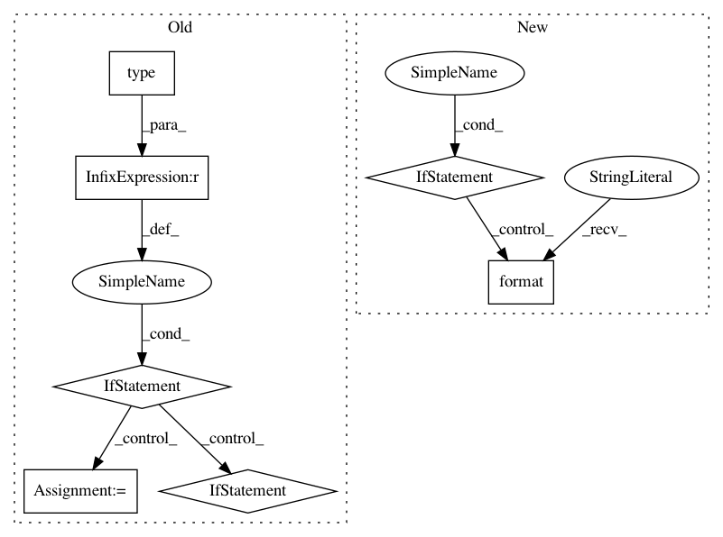

d8bde7b36921a55df154e866571736ef898ae5db,utils/search/search_general.py,,convert_to_solr_document,#Any#,38
Before Change
// If analysis is present, index all existing analysis fields under SOLR"s dynamic fields "*_i", "*_d", "*_s"
// and "*_b" depending on the value"s type
for key, value in ac_analysis.items():
if type(value) == int:
document["ac_{0}_i".format(key)] = value
elif type(value) == float:
document["ac_{0}_d".format(key)] = value
elif type(value) == str:
document["ac_{0}_s".format(key)] = value
elif type(value) == bool:
document["ac_{0}_b".format(key)] = value
else:
// Don"t index that field
pass
return document
def add_sounds_to_solr(sounds):
After Change
// and "*_b" depending on the value"s type. Also add Audio Commons prefix.
for key, value in ac_analysis.items():
suffix = settings.SOLR_DYNAMIC_FIELDS_SUFFIX_MAP.get(type(value), None)
if suffix:
document["{0}{1}{2}".format(settings.AUDIOCOMMONS_DESCRIPTOR_PREFIX, key, suffix)] = value
return document
def add_sounds_to_solr(sounds):
In pattern: SUPERPATTERN
Frequency: 3
Non-data size: 7
Instances
Project Name: MTG/freesound
Commit Name: d8bde7b36921a55df154e866571736ef898ae5db
Time: 2018-09-05
Author: frederic.font@upf.edu
File Name: utils/search/search_general.py
Class Name:
Method Name: convert_to_solr_document
Project Name: lovit/soynlp
Commit Name: 563ef6eac21afc6caf62577ee76acd673536176b
Time: 2018-01-07
Author: soy.lovit@gmail.com
File Name: soynlp/pos/_dictionary.py
Class Name: Dictionary
Method Name: remove_words
Project Name: GPflow/GPflow
Commit Name: a1a3a6a27e236464460d07fa7e0c4b605d094717
Time: 2017-08-17
Author: art.art.v@gmail.com
File Name: GPflow/_settings.py
Class Name:
Method Name: parse